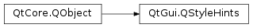

QStyleHints¶
Synopsis¶
Functions¶
- def
cursorFlashTime() - def
fontSmoothingGamma() - def
keyboardAutoRepeatRate() - def
keyboardInputInterval() - def
mouseDoubleClickInterval() - def
mousePressAndHoldInterval() - def
mouseQuickSelectionThreshold() - def
passwordMaskCharacter() - def
passwordMaskDelay() - def
setCursorFlashTime(cursorFlashTime) - def
setFocusOnTouchRelease() - def
setKeyboardInputInterval(keyboardInputInterval) - def
setMouseDoubleClickInterval(mouseDoubleClickInterval) - def
setMousePressAndHoldInterval(mousePressAndHoldInterval) - def
setMouseQuickSelectionThreshold(threshold) - def
setStartDragDistance(startDragDistance) - def
setStartDragTime(startDragTime) - def
setTabFocusBehavior(tabFocusBehavior) - def
setUseHoverEffects(useHoverEffects) - def
setWheelScrollLines(scrollLines) - def
showIsFullScreen() - def
showIsMaximized() - def
showShortcutsInContextMenus() - def
singleClickActivation() - def
startDragDistance() - def
startDragTime() - def
startDragVelocity() - def
tabFocusBehavior() - def
useHoverEffects() - def
useRtlExtensions() - def
wheelScrollLines()
Signals¶
- def
cursorFlashTimeChanged(cursorFlashTime) - def
keyboardInputIntervalChanged(keyboardInputInterval) - def
mouseDoubleClickIntervalChanged(mouseDoubleClickInterval) - def
mousePressAndHoldIntervalChanged(mousePressAndHoldInterval) - def
mouseQuickSelectionThresholdChanged(threshold) - def
startDragDistanceChanged(startDragDistance) - def
startDragTimeChanged(startDragTime) - def
tabFocusBehaviorChanged(tabFocusBehavior) - def
useHoverEffectsChanged(useHoverEffects) - def
wheelScrollLinesChanged(scrollLines)
Detailed Description¶
The
PySide2.QtGui.QStyleHintsclass contains platform specific hints and settings.An object of this class, obtained from
PySide2.QtGui.QGuiApplication, provides access to certain global user interface parameters of the current platform.Access is read only; typically the platform itself provides the user a way to tune these parameters.
Access to these parameters are useful when implementing custom user interface components, in that they allow the components to exhibit the same behaviour and feel as other components.
See also
-
PySide2.QtGui.QStyleHints.cursorFlashTime()¶ Return type: PySide2.QtCore.int
-
PySide2.QtGui.QStyleHints.cursorFlashTimeChanged(cursorFlashTime)¶ Parameters: cursorFlashTime – PySide2.QtCore.int
-
PySide2.QtGui.QStyleHints.fontSmoothingGamma()¶ Return type: PySide2.QtCore.qreal
-
PySide2.QtGui.QStyleHints.keyboardAutoRepeatRate()¶ Return type: PySide2.QtCore.int
-
PySide2.QtGui.QStyleHints.keyboardInputInterval()¶ Return type: PySide2.QtCore.int
-
PySide2.QtGui.QStyleHints.keyboardInputIntervalChanged(keyboardInputInterval)¶ Parameters: keyboardInputInterval – PySide2.QtCore.int
-
PySide2.QtGui.QStyleHints.mouseDoubleClickInterval()¶ Return type: PySide2.QtCore.int
-
PySide2.QtGui.QStyleHints.mouseDoubleClickIntervalChanged(mouseDoubleClickInterval)¶ Parameters: mouseDoubleClickInterval – PySide2.QtCore.int
-
PySide2.QtGui.QStyleHints.mousePressAndHoldInterval()¶ Return type: PySide2.QtCore.int
-
PySide2.QtGui.QStyleHints.mousePressAndHoldIntervalChanged(mousePressAndHoldInterval)¶ Parameters: mousePressAndHoldInterval – PySide2.QtCore.int
-
PySide2.QtGui.QStyleHints.mouseQuickSelectionThreshold()¶ Return type: PySide2.QtCore.int
-
PySide2.QtGui.QStyleHints.mouseQuickSelectionThresholdChanged(threshold)¶ Parameters: threshold – PySide2.QtCore.int
-
PySide2.QtGui.QStyleHints.passwordMaskCharacter()¶ Return type: PySide2.QtCore.QChar
-
PySide2.QtGui.QStyleHints.passwordMaskDelay()¶ Return type: PySide2.QtCore.int
-
PySide2.QtGui.QStyleHints.setCursorFlashTime(cursorFlashTime)¶ Parameters: cursorFlashTime – PySide2.QtCore.intSets the
cursorFlashTime.
-
PySide2.QtGui.QStyleHints.setFocusOnTouchRelease()¶ Return type: PySide2.QtCore.bool
-
PySide2.QtGui.QStyleHints.setKeyboardInputInterval(keyboardInputInterval)¶ Parameters: keyboardInputInterval – PySide2.QtCore.intSets the
keyboardInputInterval.
-
PySide2.QtGui.QStyleHints.setMouseDoubleClickInterval(mouseDoubleClickInterval)¶ Parameters: mouseDoubleClickInterval – PySide2.QtCore.intSets the
mouseDoubleClickInterval.
-
PySide2.QtGui.QStyleHints.setMousePressAndHoldInterval(mousePressAndHoldInterval)¶ Parameters: mousePressAndHoldInterval – PySide2.QtCore.intSets the
mousePressAndHoldInterval.
-
PySide2.QtGui.QStyleHints.setMouseQuickSelectionThreshold(threshold)¶ Parameters: threshold – PySide2.QtCore.intSets the mouse quick selection threshold.
-
PySide2.QtGui.QStyleHints.setStartDragDistance(startDragDistance)¶ Parameters: startDragDistance – PySide2.QtCore.intSets the
startDragDistance.
-
PySide2.QtGui.QStyleHints.setStartDragTime(startDragTime)¶ Parameters: startDragTime – PySide2.QtCore.intSets the
startDragDragTime.
-
PySide2.QtGui.QStyleHints.setTabFocusBehavior(tabFocusBehavior)¶ Parameters: tabFocusBehavior – PySide2.QtCore.Qt.TabFocusBehaviorSets the
tabFocusBehavior.
-
PySide2.QtGui.QStyleHints.setUseHoverEffects(useHoverEffects)¶ Parameters: useHoverEffects – PySide2.QtCore.bool
-
PySide2.QtGui.QStyleHints.setWheelScrollLines(scrollLines)¶ Parameters: scrollLines – PySide2.QtCore.intSets the
wheelScrollLines.
-
PySide2.QtGui.QStyleHints.showIsFullScreen()¶ Return type: PySide2.QtCore.bool
-
PySide2.QtGui.QStyleHints.showIsMaximized()¶ Return type: PySide2.QtCore.bool
-
PySide2.QtGui.QStyleHints.showShortcutsInContextMenus()¶ Return type: PySide2.QtCore.bool
-
PySide2.QtGui.QStyleHints.singleClickActivation()¶ Return type: PySide2.QtCore.bool
-
PySide2.QtGui.QStyleHints.startDragDistance()¶ Return type: PySide2.QtCore.int
-
PySide2.QtGui.QStyleHints.startDragDistanceChanged(startDragDistance)¶ Parameters: startDragDistance – PySide2.QtCore.int
-
PySide2.QtGui.QStyleHints.startDragTime()¶ Return type: PySide2.QtCore.int
-
PySide2.QtGui.QStyleHints.startDragTimeChanged(startDragTime)¶ Parameters: startDragTime – PySide2.QtCore.int
-
PySide2.QtGui.QStyleHints.startDragVelocity()¶ Return type: PySide2.QtCore.int
-
PySide2.QtGui.QStyleHints.tabFocusBehavior()¶ Return type: PySide2.QtCore.Qt.TabFocusBehavior
-
PySide2.QtGui.QStyleHints.tabFocusBehaviorChanged(tabFocusBehavior)¶ Parameters: tabFocusBehavior – PySide2.QtCore.Qt.TabFocusBehavior
-
PySide2.QtGui.QStyleHints.useHoverEffects()¶ Return type: PySide2.QtCore.bool
-
PySide2.QtGui.QStyleHints.useHoverEffectsChanged(useHoverEffects)¶ Parameters: useHoverEffects – PySide2.QtCore.bool
-
PySide2.QtGui.QStyleHints.useRtlExtensions()¶ Return type: PySide2.QtCore.bool
-
PySide2.QtGui.QStyleHints.wheelScrollLines()¶ Return type: PySide2.QtCore.int
-
PySide2.QtGui.QStyleHints.wheelScrollLinesChanged(scrollLines)¶ Parameters: scrollLines – PySide2.QtCore.int
© 2018 The Qt Company Ltd. Documentation contributions included herein are the copyrights of their respective owners. The documentation provided herein is licensed under the terms of the GNU Free Documentation License version 1.3 as published by the Free Software Foundation. Qt and respective logos are trademarks of The Qt Company Ltd. in Finland and/or other countries worldwide. All other trademarks are property of their respective owners.